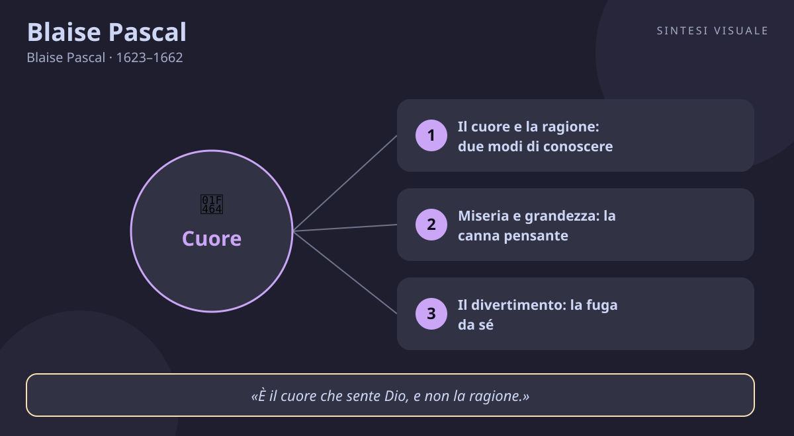

Home / Filosofi / Blaise Pascal

Blaise Pascal
Blaise Pascal · 1623–1662
«Il cuore ha le sue ragioni, che la ragione non conosce»
- Cuore e ragione
- Scommessa
- Canna pensante
- Divertissement
💬La massima
«Il cuore ha le sue ragioni, che la ragione non conosce.»
— Blaise Pascal, Pensieri, frammento 277 (numerazione Brunschvicg; 423 nell'edizione Lafuma). In francese: «Le cœur a ses raisons, que la raison ne connaît point.» I Pensieri uscirono postumi nel 1670, otto anni dopo la morte dell'autore, da foglietti sparsi che Pascal non fece in tempo a ordinare.
Spiegazione. Immagina il più grande matematico del suo tempo — uno che a sedici anni scriveva di geometria e a diciannove costruiva calcolatrici — che a un certo punto ti dice: la ragione non basta. Non sta tradendo la scienza: sta descrivendo come funziona davvero la mente. Per Pascal il «cuore» non è il sentimentalismo da romanzo, ma la facoltà con cui cogliamo d'un colpo le verità prime: che esistono lo spazio, il tempo, il movimento, i numeri. Prova a dimostrare con un ragionamento che ieri è passato e domani verrà: non ci riuscirai mai, eppure ne sei certissimo. Quella certezza viene dal cuore. La ragione, dice Pascal, è potentissima ma arriva seconda: dimostra, deduce, calcola — ma solo a partire da princìpi che non ha scelto lei. È come un notaio bravissimo che redige atti impeccabili, ma i terreni su cui scrive glieli ha indicati qualcun altro. Così anche l'amore, la fede, le decisioni grandi della vita: seguono «ragioni» vere e solide — non capricci — ma di un altro ordine, che il sillogismo non sa pesare.
Il punto sottile. Attenzione al fraintendimento più comune: Pascal non dice «spegni il cervello e segui la pancia». Dice esattamente il contrario: il cuore ha delle ragioni, cioè conosce davvero, con una sua precisione. E aggiunge che proprio su queste conoscenze del cuore «la ragione deve appoggiarsi, e su di esse fondare tutto il suo ragionamento». Cuore e ragione non sono nemici: sono due organi della stessa mente, come gli occhi e le mani. Il guaio nasce quando uno dei due pretende di fare il lavoro dell'altro — quando la ragione vuole dimostrare ciò che si può solo intuire (che la vita vale la pena, che una persona è degna di fiducia), o quando il sentimento pretende di confutare un calcolo. La saggezza, per Pascal, è tenere ciascuno al suo posto: umiltà della ragione, dignità del cuore.
Perché conta oggi. Viviamo sommersi di dati, classifiche, recensioni a stelle: per ogni scelta — che telefono comprare, che lavoro accettare, chi sposare — pretendiamo una dimostrazione. E poi restiamo paralizzati, o decidiamo coi dadi truccati dell'algoritmo. Pascal ci ricorda che le scelte più importanti non si dimostrano, si riconoscono: nessun foglio di calcolo ti dirà se ami davvero qualcuno o se un lavoro è «il tuo». Raccogli pure tutti i dati del mondo, ma alla fine dovrai fare il passo che nessun ragionamento farà per te: fidarti di ciò che il cuore sa prima che la ragione lo sappia spiegare.
👤Biografia
Blaise Pascal nacque il 19 giugno 1623 a Clermont-Ferrand, nell'Alvernia, da Étienne Pascal, magistrato e appassionato di matematica, e da Antoinette Bégon, morta quando Blaise aveva solo tre anni. Il padre, rimasto vedovo con tre figli, decise di educarli da sé e nel 1631 si trasferì a Parigi per farli crescere tra scienziati e biblioteche. Il piccolo Blaise era un prodigio quasi inquietante: a undici anni scriveva un trattato sui suoni, a sedici pubblicava il Saggio sulle coniche, un lavoro di geometria proiettiva che lasciò a bocca aperta Cartesio stesso — il quale, incredulo, insinuò che l'avesse scritto il padre.
La macchina e il vuoto. A diciannove anni, per aiutare il padre nei calcoli delle tasse (Étienne era diventato intendente in Normandia), Blaise inventò la pascalina, una delle prime calcolatrici meccaniche della storia, con rotelline e riporti automatici: ne fece costruire una cinquantina di esemplari. Poi si gettò nella fisica: riprese gli esperimenti di Torricelli sul vuoto e nel 1648 fece eseguire dal cognato Florin Périer la celebre prova del Puy-de-Dôme — la colonna di mercurio si abbassa salendo in quota — dimostrando la pressione atmosferica e demolendo il vecchio dogma che «la natura ha orrore del vuoto». Gli scienziati di mezza Europa litigavano con lui per lettera; i gesuiti lo attaccavano, lui rispondeva colpo su colpo.
La notte di fuoco. Nell'estate del 1654, in pochi mesi, tenne con Fermat il carteggio che fondò il calcolo delle probabilità (nato da un problema di divisione delle poste in un gioco d'azzardo interrotto). Poi, nella notte tra il 23 e il 24 novembre 1654, accadde l'evento che spaccò la sua vita in due: un'esperienza religiosa travolgente, dalle due di notte alle due del mattino, che annotò su un foglio — il Memoriale — cominciando con la parola «Fuoco». Cucì quel foglio nella fodera del suo cappotto, dove fu ritrovato solo dopo la sua morte. Da quella notte Pascal abbandonò il mondo mondano, si avvicinò ai giansenisti dell'abbazia di Port-Royal e mise il suo genio al servizio di Dio: scrisse Le provinciali (1656–1657), pamphlet micidiali contro la morale accomodante dei gesuiti, firmati con lo pseudonimo di Louis de Montalte, e cominciò l'opera che non finirà mai, i Pensieri, un'apologia del cristianesimo rivolta agli scettici e ai libertini del suo tempo.
La fine a trentanove anni. La salute di Pascal fu sempre fragile: emicranie, dolori allo stomaco, insonnia lo tormentarono per anni. Eppure lavorava senza sosta — matematica, fisica, controversie religiose, opere di carità (inventò perfino una delle prime linee di trasporti pubblici di Parigi, le carrozze a cinque soldi). Morì a Parigi il 19 agosto 1662, a soli trentanove anni, dopo aver chiesto di essere ricoverato all'ospedale degli incurabili per morire tra i poveri. Una sorella raccontò che le sue ultime parole furono di abbandono sereno. I foglietti dei Pensieri, legati in fasci alla rinfusa, furono pubblicati dagli amici di Port-Royal nel 1670.
Il carattere. Timido e tagliente insieme: dolcissimo con gli amici e la famiglia, spietato nelle polemiche, con un'ironia che faceva ridere tutta Parigi alle spalle dei potenti. Polemico con Cartesio — che ammirava come scienziato ma giudicava freddo come filosofo («Cartesio è inutile e incerto», scrisse) — e insofferente verso chiunque usasse la ragione come un martello per ogni chiodo. Diceva di sé che sapeva essere leggero e pesante secondo le ore, e chiedeva a Dio la grazia di «ben pensare», perché «tutta la nostra dignità sta nel pensiero».
📌Sintesi del pensiero
Pascal è il pensatore del limite e del paradosso: l'uomo è insieme miseria e grandezza, una «canna pensante» schiacciabile da una goccia d'acqua ma più nobile dell'universo che lo uccide, perché sa di morire. Contro Cartesio, sostiene che la ragione non fonda se stessa: i princìpi primi si colgono con il cuore, con lo «spirito di finezza», mentre la geometria dimostra solo ciò che è già stato intuito. La vita senza Dio è un divertimento continuo per non pensare alla morte; ma anche la ragione, scommessa alla mano, consiglia di credere: se Dio esiste si vince l'infinito, se non esiste non si perde quasi nulla.
- Conoscenza: due spiriti — geometria (dimostrare, dedurre) e finezza (intuire d'un colpo i princìpi); il cuore sente ciò che la ragione non può fondare.
- Antropologia: l'uomo è sproporzione tra infiniti — troppo grande per il nulla, troppo piccolo per il tutto; miseria senza Dio, grandezza nel pensarlo.
- Religione: la scommessa rende ragionevole credere; la fede è «Dio sensibile al cuore», non conclusione di un sillogismo.
🏛️I temi fondamentali
- Il cuore e la ragione: due modi di conoscere. Pascal distingue lo «spirito di geometria» — lento, rigoroso, fatto di definizioni e deduzioni — dallo «spirito di finezza», che vede d'un colpo, in un contesto concreto, ciò che conta. Il medico esperto che capisce il paziente entrando nella stanza, l'amico che sente quando menti anche se il tuo racconto fila: quella è finezza, e nessun algoritmo la sostituisce. I princìpi della stessa matematica — spazio, tempo, numero — non si dimostrano: si sentono. La ragione che dimentica questo diventa ridicola, come un righello che pretendesse di misurare la musica. Esempio concreto: in una trattativa o in una diagnosi, i dati contano, ma l'ultimo giudizio spetta a quell'intelligenza rapida che coglie l'insieme — ed è saggio darle ascolto invece di soffocarla sotto i fogli di calcolo.
- Miseria e grandezza: la canna pensante. L'uomo è l'essere più fragile della natura — «un vapore, una goccia d'acqua è sufficiente per ucciderlo» — eppure è più nobile di tutto l'universo, perché sa di morire mentre l'universo non sa nulla. Questa sproporzione è la sua definizione: sospeso tra due infiniti, l'infinitamente grande dei cieli e l'infinitamente piccolo degli atomi, troppo vasto per accontentarsi delle cose finite, troppo piccolo per afferrarle da solo. Di qui l'inquietudine che ci abita: ci annoiamo di tutto, niente ci basta, e chiamiamo «crisi» quella che è la nostra condizione. La dignità non sta nel negare la fragilità, ma nel pensarla: «lavoriamo dunque a ben pensare: ecco il principio della morale».
- Il divertimento: la fuga da sé. Perché gli uomini corrono dietro a cariche, giochi, cacce, lite e rumore? Pascal conia una parola destinata a restare: divertissement, diversivo. Non cerchiamo il piacere, cerchiamo l'agitazione che ci impedisca di stare soli in una stanza a pensare alla nostra condizione mortale. Il re stesso, scrive, è infelice se lo si lascia senza svaghi: appena si ferma, il pensiero della morte lo raggiunge. Tre secoli e mezzo dopo, lo riconosciamo benissimo: lo scroll infinito del telefono, le serie divorate una dietro l'altra, il lavoro riempito fino all'orlo non per necessità ma per non sentire il silenzio. Pascal non condanna il riposo né il gioco onesto: denuncia la vita intera ridotta a un anestetico contro la domanda «che senso ha tutto questo?».
- La scommessa: la ragione consiglia di credere. Il brano più discusso dei Pensieri: sull'esistenza di Dio la ragione non può decidere — le prove non bastano né in un senso né nell'altro — ma scommettere bisogna, perché non scegliere è già una scelta. Allora calcoliamo da giocatori: se credi e Dio esiste, vinci una felicità infinita; se credi e Dio non esiste, hai perso poco (qualche piacere, qualche ora). Se non credi e Dio esiste, perdi l'infinito; se non credi e non esiste, hai guadagnato poco. A conti fatti, «bisogna scommettere» su Dio: non è una dimostrazione, è la mossa razionale di chi ammette i propri limiti. E Pascal aggiunge il consiglio pratico: comportati come se credessi — prendi l'acqua santa, fai dire le messe — e la fede verrà, perché «l'abitudine» piega anche la mente. Scandaloso per i teologi, geniale per i matematici: è nata qui la teoria della decisione.
📚Le opere principali
- Pensieri (1670, postumi). Migliaia di frammenti trovati dopo la morte e pubblicati dagli amici di Port-Royal: dovevano diventare un'apologia del cristianesimo per convincere gli scettici. Contengono la scommessa, la canna pensante, il divertimento, il cuore e la ragione. È il libro che ha inventato l'esistenzialismo due secoli prima degli esistenzialisti: miseria, noia, paradosso, scelta. Conta perché nessuno, prima, aveva descritto l'animo moderno — inquieto, distratto, assetato d'infinito — con questa precisione chirurgica.
- Le provinciali (1656–1657). Diciotto lettere immaginarie di un parigino curioso a un amico di provincia, firmate «Louis de Montalte»: difendono i giansenisti di Port-Royal dagli attacchi dei teologi gesuiti, deridendo la casistica che giustificava ogni compromesso morale. Ebbero un successo enorme — le leggeva tutta Parigi — e cambiarono la prosa francese: Voltaire disse che vi nacque la vera eloquenza moderna. Contano perché mostrano il Pascal combattente: la stessa penna dei teoremi sa essere una spada, e l'ironia può essere un'arma teologica.
- Gli scritti scientifici: coniche, pascalina, vuoto, probabilità. Il Saggio sulle coniche (1640, a sedici anni); la macchina aritmetica brevettata nel 1649; le Esperienze sull'equilibrio dei liquidi e i trattati sulla pressione dell'aria (1647–1648), con la prova del Puy-de-Dôme; il carteggio con Fermat (1654) che fonda il calcolo delle probabilità; il trattato sul triangolo aritmetico. Contano perché il «filosofo del cuore» fu anche uno dei padri della scienza moderna: l'unità di misura della pressione si chiama pascal, e ogni calcolo di probabilità porta la sua firma.
💬Massime celebri
«L'uomo non è che una canna, la più fragile della natura; ma è una canna pensante.» — Pensieri, n. 347: non serve che l'universo si armi per annientarlo, basta una goccia d'acqua; ma se l'universo lo schiaccia, l'uomo resta più nobile, perché sa di morire. Conta perché in due righe dice tutta l'antropologia di Pascal: fragilità assoluta, dignità assoluta — e la dignità sta nel pensiero.
«Il silenzio eterno di questi spazi infiniti mi spaventa.» — Pensieri, n. 201: la confessione dello sgomento cosmico davanti a un universo muto e smisurato. Conta perché è il primo grido dell'angoscia moderna: la scienza allarga i cieli e l'uomo, invece di sentirsi padrone, si scopre sperduto — e comincia a cercare un senso che i telescopi non danno.
«È il cuore che sente Dio, e non la ragione.» — Pensieri, n. 278: la fede è «Dio sensibile al cuore», non conclusione di un ragionamento. Conta perché sposta la religione dal tribunale delle prove al luogo dell'incontro: Dio non si dimostra come un teorema, si riconosce come una presenza — e questo vale per ogni amore, non solo per quello divino.
⌛Contesto storico
- Pascal nacque nel 1623, mentre la Francia delle guerre di religione cercava di ricucirsi: Luigi XIII regnava, ma a governare davvero era il cardinale Richelieu, che accentrò il potere, domò i protestanti a La Rochelle (1628) e gettò le basi dell'assolutismo. Il piccolo Blaise crebbe in una Parigi di duelli, salotti e primi giornali; da adulto vide salire al trono il Re Sole, Luigi XIV (1643, con la reggenza di Anna d'Austria e del cardinale Mazarino), e visse gli anni turbolenti della Fronda (1648–1653), la rivolta di nobili e parlamenti contro il fisco reale, mentre per le strade si barricavano i parigini e il giovane re fuggiva di notte dalla capitale.
- La sua giovinezza coincise con la fine della Guerra dei Trent'anni (1618–1648), chiusa dalla pace di Vestfalia: la Germania era un deserto di villaggi bruciati e la Francia ne usciva prima potenza d'Europa. Intanto la Controriforma cattolica stringeva la vite sulla cultura: nel 1633 il Sant'Uffizio aveva condannato Galileo, e nel 1653 il papa condannò cinque proposizioni attribuite a Giansenio, aprendo la persecuzione contro Port-Royal — il monastero e le scuole dove Pascal aveva trovato i suoi amici. Le sue Provinciali uscirono mentre i giansenisti rischiavano la condanna: scrivere era un atto politico, quasi un reato.
- La società in cui si formò era spaccata in due: da una parte i salotti mondani dei libertini, nobili colti e scettici che ridevano della religione tra un duello e una partita; dall'altra Port-Royal, con le sue scuole rigorose e le sue monache inflessibili. In mezzo, l'esplosione della rivoluzione scientifica: Torricelli e il barometro, Harvey e la circolazione del sangue, Cartesio e la geometria analitica, Gassendi e gli atomi. Pascal stava al crocevia di tutto: frequentava i salotti e i matematici, giocava d'azzardo con il duca di Roannez e pregava con le monache.
- Da chi è stato influenzato sant'Agostino, il dottore della grazia e del cuore inquieto, letto attraverso Giansenio; Euclide e la scuola matematica del padre Étienne e di Mersenne; Montaigne, maestro nel descrivere l'uomo senza maschere; Cartesio, ammirato come geometra e confutato come filosofo — troppo «inutile e incerto» nelle cose dell'anima; gli scettici antichi, di cui usò le armi contro la presunzione della ragione.
- A chi ha trasmesso ai moralisti francesi La Rochefoucauld e La Bruyère; all'illuminismo, che lo combatté ma ne ereditò la prosa; a Rousseau e a Chateaubriand, che ne fecero il patrono del sentimento religioso; ai pensatori dell'esistenza — Kierkegaard, Nietzsche (che lo ammirava pur detestandone la fede), Heidegger, Sartre; ai filosofi della scommessa e della decisione razionale, fino alla teoria dei giochi; alla letteratura novecentesca dell'angoscia, da Dostoevskij a Bernanos.
🌊L'eredità
- Pascal inventò, senza saperlo, l'esistenzialismo: due secoli prima di Kierkegaard descrisse l'uomo come paradosso vivente — noia, divertimento, angoscia davanti al silenzio dei cieli — e fece della scelta scommessa il cuore della filosofia. Nietzsche, che pure vedeva nel cristianesimo un nemico, lo chiamò l'unico cristiano logico e lo lesse con devozione rabbiosa; Kierkegaard vi trovò il modello del salto della fede; Heidegger e Sartre, atei, ereditarono la sua analisi della fuga da sé e della distrazione quotidiana.
- Nella scienza, il suo nome resta inciso ovunque: l'unità di pressione del Sistema Internazionale si chiama pascal, il triangolo aritmetico porta il suo nome e il carteggio con Fermat è l'atto di nascita del calcolo delle probabilità — la matematica dell'incertezza che oggi governa assicurazioni, finanza, medicina e intelligenza artificiale. Il linguaggio di programmazione Pascal, diffusissimo negli anni Ottanta e Novanta, fu battezzato in suo onore proprio perché unì rigore logico e chiarezza didattica.
- Nella Chiesa e nella cultura francese, Port-Royal divenne un mito: distrutta per ordine di Luigi XIV nel 1710–1711, restò il simbolo della resistenza della coscienza contro il potere, e le Provinciali restano il modello insuperato della polemica che ride — Voltaire, che pure irrideva i giansenisti, ammise di aver imparato da lui a scrivere. Ogni volta che un pensatore contemporaneo parla di «limiti della ragione», di «intelligenza del cuore» o di attenzione contro la distrazione digitale, sta citando Pascal senza saperlo: il filosofo che a trentanove anni aveva già detto tutto sul nostro presente.
🌍Esempi di oggi
- La scelta dell'università (o del lavoro) col foglio Excel. Hai due offerte: una paga di più ma ti spegne, l'altra ti accende ma fa paura. Compili pro e contro, chiedi a tutti, leggi recensioni — e resti fermo. Pascal ti direbbe: i conti falli pure, ma poi riconosci che lo stipendio non è «ragione» sufficiente per una vita. Il cuore sa già quale scrivania è la tua: la ragione serve a organizzare il trasloco, non a decidere se partire.
- La serata a scrollare per non pensare. Torni stanco, ceni, e poi tre ore di video uno dopo l'altro senza nemmeno ricordarli. Non ti divertivi: ti anestetizzavi, perché appena il telefono si spegne arriva quel pensiero scomodo — il tempo che passa, una scelta rimandata, un senso che manca. È il divertissement in purezza: Pascal lo descrisse nel 1660 senza smartphone. L'esperimento pascaliano è semplice: una sera, telefono in un cassetto, mezz'ora da solo con quel pensiero. Fa paura? Quella paura è l'inizio del pensare.
- Il check-up rimandato da anni. Sai che dovresti fare quelle analisi, ma «tanto mi sento bene» e intanto giochi alla lotteria con la salute, puntando tutto sul caso migliore. La scommessa di Pascal rovescia il tavolo: quando la posta è grande e il costo della precauzione è piccolo, il calcolo razionale consiglia di coprirsi, non di sfidare la sorte. Non serve la certezza del pericolo per agire: basta la sproporzione tra ciò che rischi e ciò che costa prevenire.
📄Blaise Pascal (1623–1662), il genio che misurò il vuoto dei cieli e scoprì il peso del cuore
Ritratto (Blaise Pascal nel ritratto conservato al museo di Versailles — pubblico dominio, Wikimedia Commons):
🧠Quiz
Rispondi in chat con la lettera di ogni risposta, es. 1B 2A 3C 4D 5B. Oppure copia e rispondi così: «Quiz Pascal: 1B 2A 3C 4D 5B» (usa - per le risposte che salti).
1 Cosa intende Pascal per «cuore» nella massima «il cuore ha le sue ragioni»?
2 Perché Pascal critica Cartesio pur ammirandolo come scienziato?
3 Cos'è il divertissement per Pascal?
4 Come funziona la «scommessa» di Pascal su Dio?
5 Quale episodio divise in due la vita di Pascal nel novembre 1654?
✅Soluzioni — tocca per vedere
- B) Il cuore come organo delle verità prime. Non sentimentalismo ma conoscenza: spazio, tempo, movimento, numeri non si dimostrano, si colgono d'un colpo — e la ragione costruisce tutto il resto sopra di essi.
- C) Cartesio chiede troppo alla sola ragione. Per Pascal i princìpi si sentono con il cuore e si vedono con lo spirito di finezza; la geometria dimostra, ma non fonda. Definì Cartesio «inutile e incerto» nelle cose dell'anima.
- B) La fuga da sé. Cerchiamo agitazione — cacce, cariche, litigi, oggi scroll e serie TV — non per piacere ma per non pensare alla morte. Il re senza svaghi, dice Pascal, sarebbe infelice: appena si ferma, la sua condizione lo raggiunge.
- C) La mossa razionale di chi ammette i propri limiti. Non è una prova dell'esistenza di Dio: è teoria della decisione. Posta infinita contro costo finito — «bisogna scommettere», e comportarsi come se si credesse aiuta la fede a nascere.
- B) La notte di fuoco del 23-24 novembre 1654. Dalle due di notte alle due del mattino: «Fuoco». Il foglio del Memoriale, cucito nella fodera del cappotto e trovato dopo la morte, segnò il passaggio dallo scienziato mondano all'apologeta di Port-Royal.
🔁Ripasso
Cuore ≠ sentimento contro ragione. Il cuore pascaliano conosce davvero: coglie i princìpi che la ragione presuppone. Se dal testo esci con «segui la pancia e spegni il cervello», rileggi la spiegazione: cuore e ragione sono due organi alleati, il guaio è quando uno invade il mestiere dell'altro. Divertimento ≠ svago innocente. Pascal non condanna il riposo: denuncia la vita intera usata come anestetico contro la domanda sul senso. La cartina di tornasole è semplice: se non riesci a stare mezz'ora da solo senza telefono, quello non è riposo, è fuga. Scommessa ≠ prova di Dio. Chi risponde che Pascal «dimostra» Dio confonde i piani: la scommessa parte proprio dall'impossibilità di dimostrare. È un argomento pratico — come assicurarsi quando la posta è alta — non un teorema: convince la volontà ad aprirsi, non costringe l'intelletto a concludere.
Domani un nuovo filosofo. Se rispondi al quiz, ti darò il punteggio e un ripasso mirato solo su ciò che hai sbagliato.
🖼️In un colpo d’occhio

Tocca l’immagine per ingrandirla.